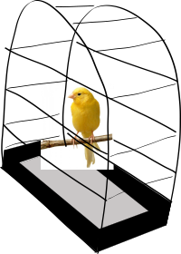
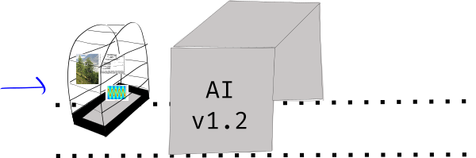
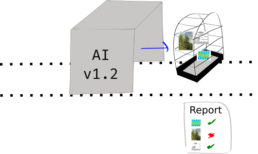

The Canary Set for Machine Learning Applications
Earlier this week I was chatting to some people and we came up with a good idea. It’s what I refer to now as the “Canary Set”.
We’re probably all familiar with the standard “canary in the cage” idea:
The standard canary in a cage.
It’s an item that can be carried with you into your hazardous job, and when it dies, it’s suggestive that the place your working in is unsafe. Poor canary.
I’d like to propose that this can be a useful idea in machine learning, where instead of a canary, we carry around an “interesting set” of data:
A Canary Set of interesting data points.

This would be called the “Canary Set” of data, and every time a new deployment of your ML model comes out, you run the mdoel across this dataset to see how it performs.
Going in …

Coming out with a report …

Let’s go into a few details of why we might want this, how it differs from the “test” or “validation” set during the training/evaluation phase of machine learning algorithms, and what benefits we might get from it.
The Canary Set: Main Justification
The main point of the canary set is to give users of your machine learning service control over a set of data that they want to evaluate your new models against. In this way, it differs significantly from the standard “test” set in that it doesn’t need to contain a well-distributed set of samples, it just needs to contain those samples that the user is interested in.
These might be:
- Rare inputs,
- Inputs for which they are uniquely concerned, as compared to other users,
- “Extreme” inputs, that check areas they are interested in,
- A random selection of their past inputs,
- … many more ideas!
I think there’s a world of options here. The point is: The user gets some control. And this is a nice idea, given that we want them to be gaining confidence in the ML system.
Secondary benefits
Increasingly we’re going to see that there will be different environments for ML training and inference. We’ve already explored this in our last blog post on TensorFlow.js, but there are also the growing number of so-called “edge devices”, the Google Edge TPU, the Movidius and the JeVois, among others.
The point is, we can’t actually guarantee that when we do testing of our model during training that it will agree exactly with the inference world, because there may be many stages in between.
This actually came up on a project I was working on last year. We trained a model, and when we deployed it to the cloud, it didn’t work well. We tracked it down to a bug in the GPU code relating to some post-processing of the models output. This error was only found becaues I decided it would be a good idea to test the model on some “real” data, before making it live. In other words, I made up my own canary set and tested the model on that first, before making it live.
Conclusion
In summary, the idea is that in any machine learning service, for users, that you build, you could consider adding the facility for the users to be involved in selecting a set of data that is used to evaluate any new versions of the models.
The benefits are:
- Increasing user engagement and trust,
- finding new interesting edge-cases where your algorithm fails,
- and ensuring the quality of inference when you may not be in control of the inference endpoint.
Hope this idea is helpful!